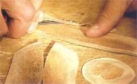

¿Para Qué Sirven las Hormas?
La horma es una copia abstracta en madera del pie humano. Una de sus funciones es sustituir el pie durante la confección del zapato para actuar como superficie de trabajo en la que los fragmentos de piel lisos puedan adquirir forma plástica. La segunda función consiste en reflejar la orientación de la moda y los requisitos estéticos; es decir, mostrar una forma perfecta, como el modelo de zapato elegido Durante los últimos cien años, la moda del calzado masculino no ha sufrido variaciones extremas. Existen unos pocos modelos básicos que se diferencian entre sí por la forma de la puntera, en el corte de la parte superior y en los elementos ornamentales. Por ello se han desarrollado modelos de hormas bautizados con el nombre de los modelos característicos, como por ejemplo, la horma Budapest, con puntera alta. Las hormas correspondientes al volumen interior y la forma exterior del zapato se elaboran de acuerdo con las medidas que se han tomado del pie, y siempre por pares. El pie derecho nunca es el reflejo perfecto del izquierdo, se dan pequeñas o grandes diferencias en cuanto al tamaño y a la forma. Un buen hormero tiene en cuenta las más leves diferencias especificadas en la hoja de medición y las traslada al zapato. Actualmente apenas quedan hormeros que sigan trabajando de una forma totalmente artesana y que ignoren las ventajas del trabajo mecánico para aliviar su fatigoso trabajo aunque sea ocasionalmente. Presentaremos los cuidadosos procedimientos de la elaboración de una horma desde un singular taller donde siguen utilizándose únicamente herramientas tradicionales y que gracias a un trabajo muy escrupuloso consigue hormas perfectas, sin las cuales las obras maestras que constituyen los zapatos a medida no podrían existir.

Hormas a medida
Método de Sustracción
De una horma básica pueden elaborarse hormas a medida a partir de dos métodos característicos. Uno da forma individual a la horma utilizando la sustracción; el otro, la adición Cuando llegan al taller del zapatero, las hormas básicas son siempre algo más grandes de los necesario. Si el pie es más estrecho o el empeine más bajo de la media, el zapatero, basándose en la hoja de medición y utilizando una lima o papel de lija de distintos grosores, da la forma final correspondiente a los zapatos deseados y elabora la horma a medida. Es decir, sustrae material. Para finalizar, la horma se pule con papel de lija no muy grueso para evitar que la piel resbale sobre la superficie durante la confección del zapato.

En primer lugar, el hormero lima la madera sobrante con una escofina gruesa. A continuación usa una escofina más fina. Se trata del método de sustracción.
Método de adición
Este método de confección de hormas a medida se remonta a las tradiciones más antiguas. La corrección también se realiza según la hoja de mediciones, teniendo en cuenta los puntos críticos. Los lugares característicos donde el hormero debe aplicar las correcciones son, normalmente, el contorno exterior de la planta, la zona de los metatarsianos, el dedo pulgar, el empeine y el talón. En muy pocos casos dichos puntos son más pequeños de lo normal. Es más frecuente que el pie sea más ancho, el empeine y el pulgar más elevados o el talón más desarrollado. Mediante la adición de varias capas de pie de distintos grosores, se da la forma deseada a la horma. Si las medidas difieren mucho de la media, puede aplicarse más de una capa de piel.

Se comprueba la longitud según los datos de la hoja de medición.
- 
Deben rebajarse los bordes de las capas de piel.
Hormas Corregidas
Confeccionar un par de zapatos sobre una horma corregida mediante el método de adición no supone ningún problema para un zapatero. La forma deseada se consigue pegando fragmentos de piel a la horma. No obstante, esos trozos de piel pueden despegarse o deformarse durante la confección. Por tanto, si el cliente desea utilizar la horma para varios pares de zapatos, resulta más seguro usarla como patrón para una horma a medida definitiva. Las hormas izquierda y derecha corregidas mediante capas de piel se envían de nuevo al taller del hormero, donde se utilizan como patrón para la elaboración de hormas a medida. Bajo las muelas se coloca una horma algo más grande. El copiado definitivo permite obtener en unos minutos la horma adecuada al modelo de zapato elegido.
Los añadidos se pegan en su lugar correspondiente.
Se realizan frecuentes mediciones para comprobar el volumen.

Las hormas corregidas con piel son utilizadas como patrones para las hormas a medida definitivas, que actuarán como sustituto del pie del cliente y de todos sus rasgos característicos.